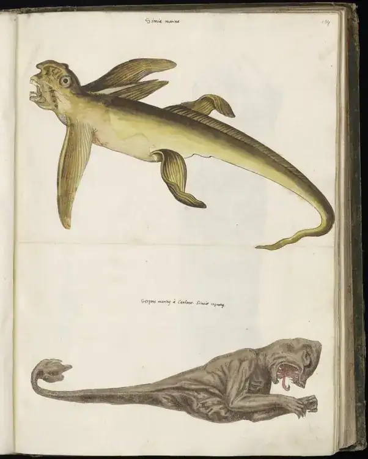
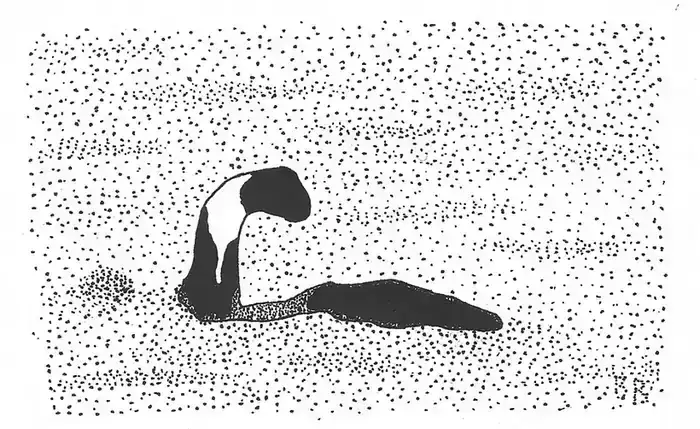

What cryptozoology claims to be
The term was coined by Bernard Heuvelmans, a Belgian zoologist, for the study of “hidden animals” — species reported but not yet described. In principle this is a real activity: the okapi, the coelacanth and the giant squid were all once “cryptids”. In practice the field’s famous cases have not produced a specimen in a century of looking, and the reason is not that nobody has tried.
Maps, diagrams and images




Bigfoot / Sasquatch
The name is modern and has a documented etymology. “Sasquatch” is an anglicisation of a Coast Salish word, popularised in the 1920s by a British Columbia teacher and bureaucrat — and the original stories, as McGill University’s Office for Science and Society points out, described tall, long-haired people who wore clothes, lived in villages and could be spoken to. That is not a furry ape. The translation drifted, and “long hair” became “covered in fur”.
The iconography comes from 1958 (Bluff Creek footprints and the term’s spread) and 1967 (the Patterson–Gimlin film). The film has never been conclusively debunked and has never been validated either. The problem is not the film; it is everything that should accompany a breeding population of 2.5-metre primates across North America:
- No body, no skeleton, no roadkill, no zoo specimen.
- No DNA — despite environmental DNA sampling becoming routine and cheap.
- No clear photographic sequence in the age of the smartphone.
- A population needs hundreds of breeding individuals to avoid inbreeding; hundreds of large primates leave physical traces.
There is also a statistical finding that reframes the sightings. A 2024 preprint by Floe Foxon found that Bigfoot reports rise and fall with local black bear populations across the US and Canada. That does not prove any individual sighting was a bear — but it is what you would expect if most were. Foxon’s conclusion is the modest one: if you think you saw a sasquatch, it was probably a bear.
The Loch Ness Monster
This is the best-documented case, which makes it the most instructive. The modern phenomenon starts in 1933 with a road being built along the loch and a surge of local reporting; the following year came the “surgeon’s photograph” — a head and neck above the water, taken by a respected London doctor, which anchored the plesiosaur image for decades.
In the early 1990s, Christian Spurling came forward and said the photograph was a hoax: a clockwork toy submarine with a plastic-wood neck, photographed in a quiet bay with the far shore in frame to establish scale, published under the name of a reputable doctor who played along as a joke.
In 2019, a University of Otago team led by Neil Gemmell took hundreds of water samples around the loch and sequenced the eDNA. Result: no plesiosaur, no large marine reptile, no unexpected large vertebrate. They did find a great deal of eel DNA — enough that Gemmell said a giant eel could not be ruled out, a caveat widely reported as “Nessie is an eel”. Follow-up work has since argued that eels of the required size are implausible.
The pattern is the point: the strongest evidence was a photograph, the photograph was a confession, and the environmental survey found the ordinary loch.
Yeti, Mokele-mbembe, and the rest
- Yeti — the Himalayas; the 1951 Shipton footprint photograph is the iconic artefact and has been argued to be a human-made impression (the “odd depressions” suggest deliberate shaping).
- Mokele-mbembe — a sauropod-like animal reported from the Congo Basin, the cryptozoological link to living dinosaurs. Repeated expeditions, no specimen, no photograph, no scat, no carcass.
- Chupacabra — Latin American livestock deaths, traced in many cases to coyotes and dogs with severe mange; the “alien” silhouette is a hairless canid.
- Mothman — Point Pleasant, West Virginia, 1966–67; a case study in how a local panic plus a newspaper creates a durable legend.
- Lake monsters generally — Loch Morar, Lake Champlain, Okanagan; the same structure of eyewitness reports, tourism incentive and no specimen.
Individual reports are often sincere and sometimes unexplained. That is different from a species. The scientific bar is a type specimen — a body, or at minimum diagnostic DNA — and cryptozoology has had a century to produce one for its flagship animals while the cost of genetic sequencing has collapsed.
That is why the field matters to this archive. It is the cleanest available demonstration of the difference between evidence (a photograph, a footprint, a story) and proof (a specimen). Every other claim in these pages is asking you to accept the first as the second.
Sources for this page
- McGill Office for Science and Society, “Bigfoot Has Always Been a Hoax”mcgill.ca/oss
- BBC Science Focus, “Is Bigfoot real? Why people believe in the Sasquatch”sciencefocus.com
- BBC Science Focus, “How do we know that the Loch Ness Monster doesn’t exist?”sciencefocus.com
- Britannica, “Loch Ness monster”britannica.com
- Science Friday, “The Science Behind Cryptid Sightings” — the Spurling confessionsciencefriday.com
- The Guardian, “Loch Ness monster could be a giant eel, say scientists” (2019)theguardian.com
- Discover, “The Hunt for the Loch Ness Monster: Sightings and Theories”discovermagazine.com
- Science News Explores, “Have you seen Bigfoot or the Loch Ness Monster? Probably not” — the bear correlationsnexplores.org
- National Geographic, “The Science Behind Bigfoot and Other Monsters”nationalgeographic.com
Open resources on this topic
- BookUnexplained monsters and cryptids — Anderson, Holly Lynn · 2015 (Internet Archive, free to read)
- BookSea Grunkles International Cryptids Zine Seperate Page — grunklesintercryptidszine · 2025 (Internet Archive, free to read)
- BookCryptids — Cocoo299 · 2020 (Internet Archive, free to read)
- PapersOpen-access articles: DOAJ · PubMed Central · Internet Archive Scholar
- BooksPublic-domain and borrowable copies: Open Library · Project Gutenberg · Google Books
More images
Cite this page
Momin, S. (2026). Cryptids. The Larger World Archive. https://drsamonline.github.io/LARGE_GLOBE/cryptids.htmlMomin, Sohil. “Cryptids.” The Larger World Archive, 2026, https://drsamonline.github.io/LARGE_GLOBE/cryptids.html.Momin, Sohil. “Cryptids.” The Larger World Archive, 2026. https://drsamonline.github.io/LARGE_GLOBE/cryptids.html.@misc{cryptids2026cryptids,
author = {Momin, Sohil},
title = {Cryptids},
year = {2026},
howpublished = {The Larger World Archive},
url = {https://drsamonline.github.io/LARGE_GLOBE/cryptids.html},
note = {Last reviewed 20 November 2026}
}Last reviewed 20 November 2026 · Corrections policy · this page is not peer reviewed